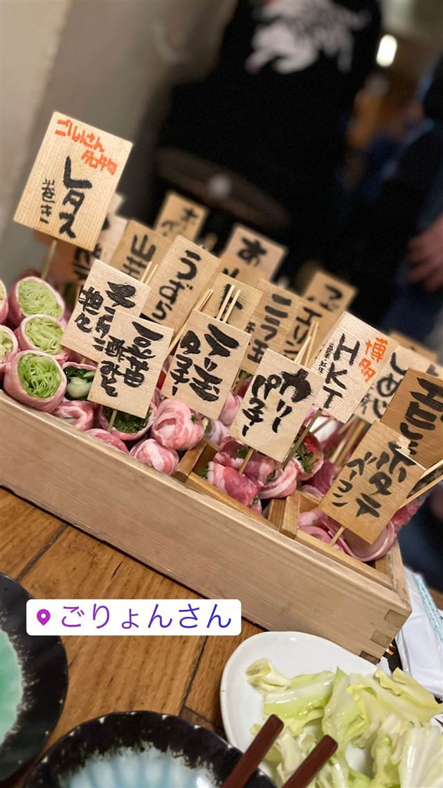

博多串焼き・野菜巻き工房 渋谷宮益坂のごりょんさん
博多で家を守る女将さんにちなむ店名、名物は野菜巻き串
ごりょんさん
「ごりょんさん」は2018年4月、渋谷・宮益坂上に開いた博多串焼き・野菜巻きの店。店名は博多で家を守る女将さんへの愛称で、看板メニューの野菜巻き串は目にも鮮やかな一品として人気を集めている。
TRIVIA
豆知識
- 店名「ごりょんさん」は博多で祭りの時に家を守る女将さんを指す愛称で、気立てが良く料理上手な博多っ子憧れの女性像に由来する
- 運営会社は看板もマニュアルも一切置かない"個店の魅力"を追求する店づくりを掲げている
REVIEWS
世間の評判
3.48食べログ
名物レタス巻きと混雑時の対応
- 名物のレタス巻きなど野菜巻き串はボリュームがあり満足度が高いという声が多い
- 串焼き全般の味が安定していておいしいと評価する声が非常に多い
- 地下にある隠れ家的な店構えと活気ある雰囲気を評価する声が非常に多い
- 混雑時は注文忘れや会計ミスがあるという指摘が複数の口コミにある
食べログ 口コミ807件
| 創業 | 2018年4月19日開業 |
|---|---|
| 系譜 | 「てやん亭゛」「ジョウモン」「MEAT肉男MAN」等を展開する飲食企業ベイシックス（代表・岩澤博氏）が手がける博多料理の一軒 |
| 看板 | 野菜巻き串 |
| こだわり | 看板の野菜巻きは見た目にも彩り豊かに仕上げられ、博多串焼きとともに提供 |
| どこから | 都心 |
| 営業時間 | 月〜日 17:00-23:30 |
| 予算 | 夜 ¥4,000～¥4,999 |
| 定休日 | 無休 |
| 場所 | 渋谷 東京都渋谷区渋谷1-6-3 ヴィラファースト渋谷 地下1F |
| メモ | 渋谷・宮益坂上のビル地下1階に立地。看板やマニュアルを敢えて作らない個店主義の店づくり |
食べたもの：野菜巻き串
NEARBY
近い店・同じ系統の店
-
 パスタ 渋谷
KURA 渋谷店
元プロゴルファーら異業種出身者が始めた、もちもち生パスタ50種以上
昼 ¥1,000～¥1,999 夜 ¥2,000～¥2,999
パスタ 渋谷
KURA 渋谷店
元プロゴルファーら異業種出身者が始めた、もちもち生パスタ50種以上
昼 ¥1,000～¥1,999 夜 ¥2,000～¥2,999
-
 ベトナム 渋谷駅
ミス・サイゴン（MISS SAIGON）
ベトナム人スタッフが作る野菜たっぷりのフォーとバインセオ
夜 ～¥5,999
ベトナム 渋谷駅
ミス・サイゴン（MISS SAIGON）
ベトナム人スタッフが作る野菜たっぷりのフォーとバインセオ
夜 ～¥5,999
-
 台湾 恵比寿
七一飯店
週1回だけの営業だった名残の店名、看板は魯肉飯
昼 ¥1,000～¥1,999 夜 ¥1,000～¥1,999
台湾 恵比寿
七一飯店
週1回だけの営業だった名残の店名、看板は魯肉飯
昼 ¥1,000～¥1,999 夜 ¥1,000～¥1,999
-
 コーヒー 渋谷
Café Kitsuné Shibuya
パリ発ブランドのカフェ、狐にちなむ名を持つバゲットサンド
昼 ¥1,000～¥1,999 夜 ¥1,000～¥1,999
コーヒー 渋谷
Café Kitsuné Shibuya
パリ発ブランドのカフェ、狐にちなむ名を持つバゲットサンド
昼 ¥1,000～¥1,999 夜 ¥1,000～¥1,999
-
 コーヒー 渋谷駅
Roasted COFFEE LABORATORY 渋谷神南店
店内焙煎の豆で淹れる「MADE IN SHIBUYA」のコーヒー
昼 ¥1,000～¥1,999 夜 ¥1,000～¥1,999
コーヒー 渋谷駅
Roasted COFFEE LABORATORY 渋谷神南店
店内焙煎の豆で淹れる「MADE IN SHIBUYA」のコーヒー
昼 ¥1,000～¥1,999 夜 ¥1,000～¥1,999
-
 カフェ 渋谷
JINNAN CAFE 渋谷店
ドラマや映画のロケ地に頻繁に使われるとろけるスフレパンケーキ
昼 ¥1,000～¥1,999 夜 ¥1,000～¥1,999
カフェ 渋谷
JINNAN CAFE 渋谷店
ドラマや映画のロケ地に頻繁に使われるとろけるスフレパンケーキ
昼 ¥1,000～¥1,999 夜 ¥1,000～¥1,999
ONSEN & SAUNA